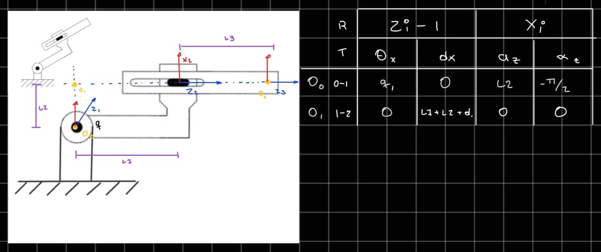
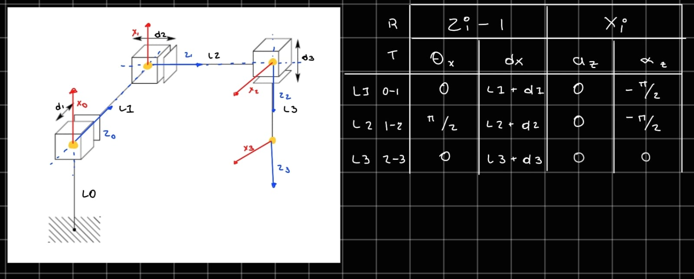
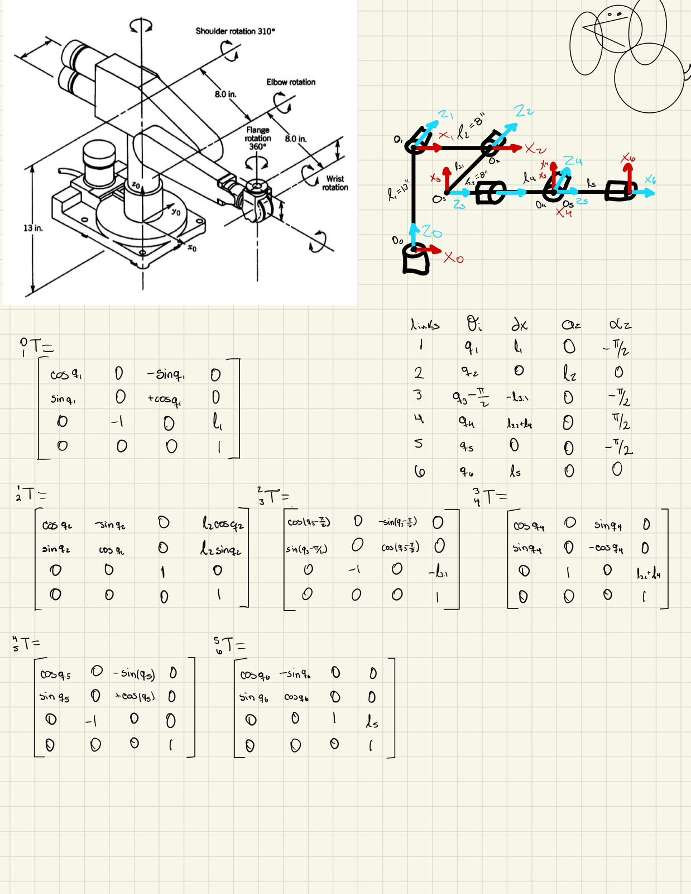
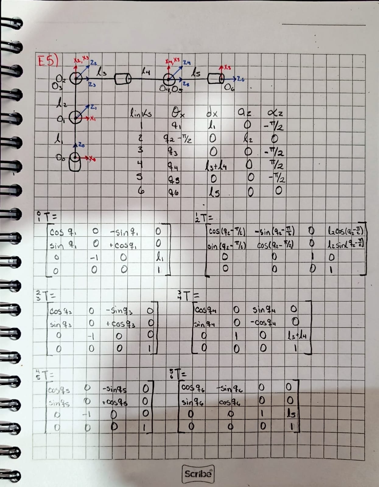

📚 Forward Kinematics
In this assigment I solved different Forward Kinematics problems.
1) Summary
- Homework Name: Forward Kinematics
- Author: Angel Ivan Dominguez Cruz
- Subject: Applied Robotics
- Date: 05/02/2026
2) Objectives
- General: To analyze different robotic mechanisms by applying forward kinematics techniques, using Denavit–Hartenberg (DH) parameters and homogeneous transformation matrices to determine the position and orientation of the end-effector.

3) First Excercise

- Explanation: This exercise focuses on a simple articulated mechanism with rotational and prismatic components. The objective is to assign coordinate frames, define the DH parameters, and compute the transformation matrix to obtain the end-effector pose.



4) Second Excercise

- Explanation: This exercise presents a robot with multiple prismatic joints arranged in different directions. The goal is to analyze linear displacements and combine them using homogeneous transformations.



5) Third Excercise

- Explanation: This exercise involves a multi-joint robotic arm with several rotational axes. The task is to model a serial manipulator and determine its full kinematic chain.


6) Fourth Excercise

- Explanation: This exercise represents an industrial-type robotic arm with defined link lengths and joint rotation limits. The objective is to apply the DH convention to a realistic robot model and compute its workspace configuration.



7) Fifth Excercise

- Explanation: This exercise focuses on a complex industrial robot with multiple degrees of freedom and a defined working envelope. The task is to determine the forward kinematics and analyze the reachable workspace.
